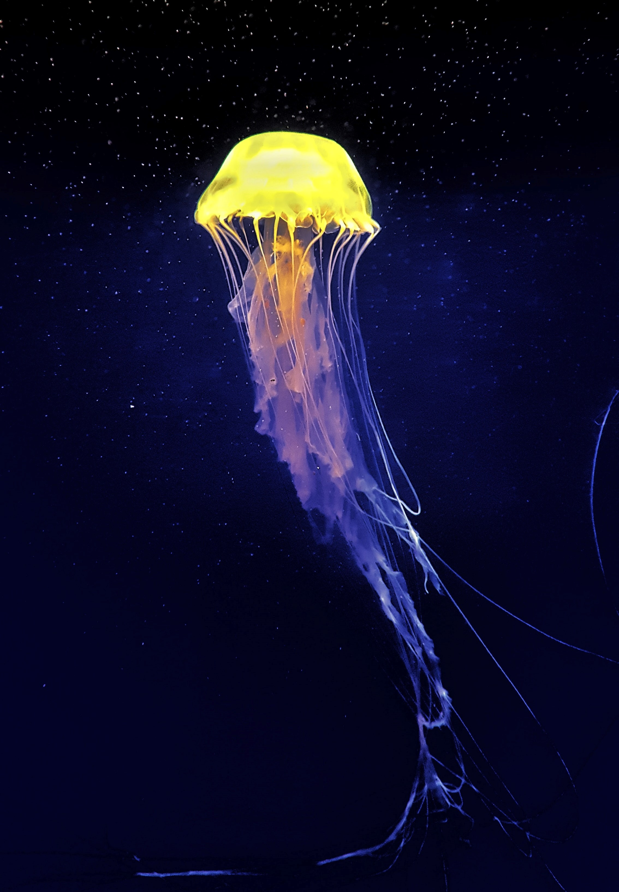

"Jellyfish are some of the Earth's most ancient animals that are still alive today. They're also immensely diverse — most animals that are called jellyfish are part of the phylum Cnidaria, which includes more than 10,000 species. Take a few moments to revel in these fun facts about jellyfish. You might be surprised by what you don't know about these oddly charismatic gelatinous creatures."

"Many jellyfish have bioluminescent organs which emit blue or green light. The light emission is typically activated by touch, which serves to startle predators. This light may also help jellyfish in a number of other ways, like attracting prey or warning other organisms that a particular area is occupied."
"Not only that, they also have no blood, no bones, and no heart. However, they do have an elementary nervous system with receptors that detect light, vibrations, and chemicals in the water. These abilities, along with the sense of gravity, allow jellyfish to orient and navigate in the water."
"Jellyfish are found in every ocean in every corner of the planet, from the coldest freezing waters of the Arctic oceans to the warm, temperate waters of the tropical oceans. They exist in different water conditions, at different depths from the ocean floor to the surface. They’re even found in some freshwater lakes and ponds!"
"The Australian box jellyfish (Chironex fleckeri) is considered the most venomous marine animal on earth. Its sting can cause paralysis, cardiac arrest, and death within a few minutes – barely enough time for a victim to swim to shore!"
"Despite their venomous defenses, jellyfish are not without predators. Tunas, sharks, swordfish, sea turtles, and even some species salmon are jellyfish’s natural enemies that are known to prey upon jellies."